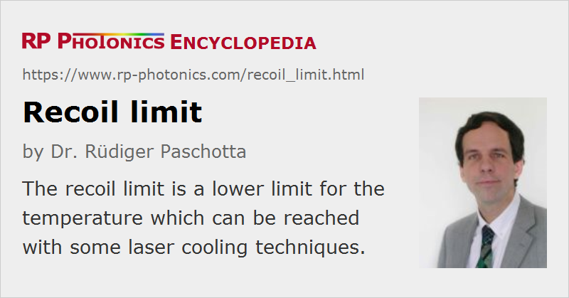

Recoil Limit
Definition: a lower limit for the temperature which can be reached with some laser cooling techniques
German: Rückstoßgrenze
How to cite the article; suggest additional literature
Author: Dr. Rüdiger Paschotta
Methods of laser cooling involve the transfer of momentum from light to atoms or ions. The recoil associated with the emission or absorption of a single photon by an atom typically leads to a velocity change of the order of a few cm/s. These discrete velocity changes result in a limit to the reachable temperature of a cloud of atoms or ions in an optical trap.
The recoil limit can be defined as the lowest temperature reachable with laser cooling methods which involve a permanent interaction of the cooled atoms with light. It is given by the equation
where λ is the wavelength of the light and m is the mass of the atoms. At this temperature, the thermal energy equals the energy of an atom with a momentum equal to the photon momentum. Typical values for the recoil limit of atoms are of the order of 1 μK.
The recoil limit can be approached (although not fully reached) with polarization gradient cooling (→ Sisyphus cooling). However, temperatures below the recoil limit have been achieved with velocity-selective coherent population trapping, where atoms become trapped in an electronic state where they do no longer interact with light. This shows that the recoil limit is not a fundamental limit which applies to all laser cooling methods.
Questions and Comments from Users
Here you can submit questions and comments. As far as they get accepted by the author, they will appear above this paragraph together with the author’s answer. The author will decide on acceptance based on certain criteria. Essentially, the issue must be of sufficiently broad interest.
Please do not enter personal data here; we would otherwise delete it soon. (See also our privacy declaration.) If you wish to receive personal feedback or consultancy from the author, please contact him e.g. via e-mail.
By submitting the information, you give your consent to the potential publication of your inputs on our website according to our rules. (If you later retract your consent, we will delete those inputs.) As your inputs are first reviewed by the author, they may be published with some delay.
Bibliography
| [1] | A. Aspect et al., “Laser cooling below the one-photon recoil energy by velocity-selective coherent population trapping”, Phys. Rev. Lett. 61 (7), 826 (1988), doi:10.1103/PhysRevLett.61.826 |
| [2] | M. Kasevich and S. Chu, “Laser cooling below a photon recoil with three-level atoms”, Phys. Rev. Lett. 69 (12), 1741 (1992), doi:10.1103/PhysRevLett.69.1741 |
| [3] | H. Katori et al., “Magneto-optical trapping and cooling of strontium atoms down to the photon recoil temperature”, Phys. Rev. Lett. 82 (6), 1116 (1999), doi:10.1103/PhysRevLett.82.1116 |
See also: Doppler limit, laser cooling, photons
and other articles in the category quantum optics
|  |
If you like this page, please share the link with your friends and colleagues, e.g. via social media:
These sharing buttons are implemented in a privacy-friendly way!